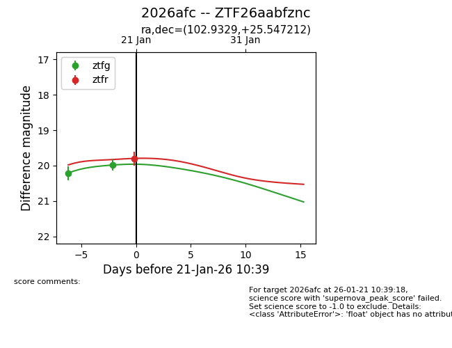
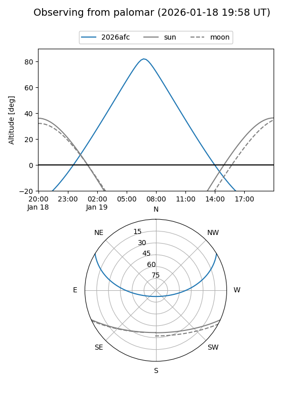
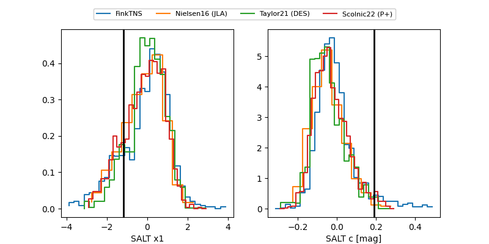

2026afc
Target 2026afc at 2026-01-29 10:13
Aliases and brokers:
FINK: link
Lasair: link
ALeRCE: link
TNS: link
YSE: link
alt names
ZTF26aabfznc (ztf,fink_ztf)
2026afc (tns,yse)
Coordinates:
equatorial (ra, dec) = 102.9329,+25.54721
equatorial (HMS+DMS) = 06:51:43.90,+25:32:49.96
galactic (l, b) = (189.9152,+11.40101)
Flags:
Photometry:
last ztfg=19.98, ztfr=19.80
2 ztfg, 1 ztfr detections
Lightcurve

Visibility


Additional plots
